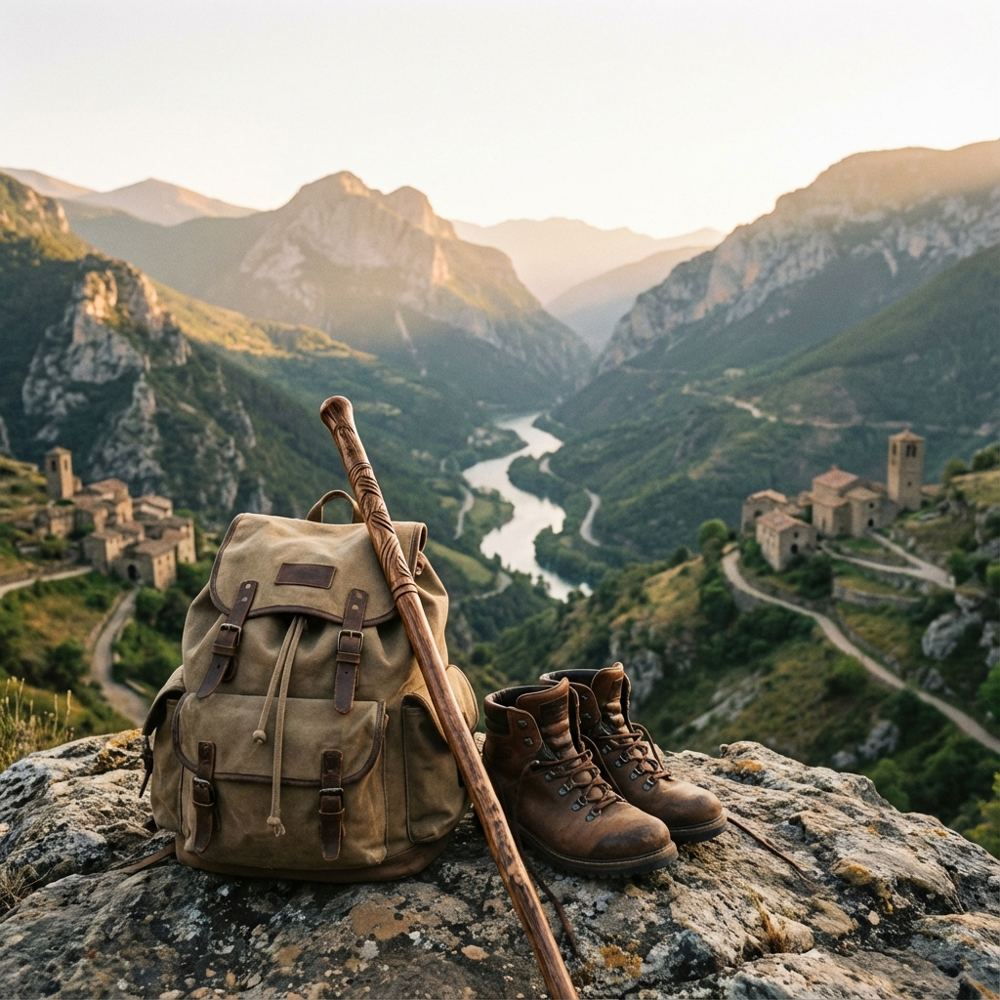

1. El Equipo: Menos es Más
Muchos principiantes cometen el error de cargar con todo. Aquí lo esencial:
- Capas, capas, capas: La técnica de la cebolla es clave. Camiseta transpirable,
forro polar ligero y un cortavientos o impermeable.
- El Calzado: No estrenes botas en una ruta larga. Usa calcetines específicos de
trekking para evitar ampollas.
- La Mochila: Una de 20-30 litros es suficiente para el día. Asegúrate de ajustar
bien las cintas a la cadera.
2. Seguridad de "Kabra"
La montaña no perdona la improvisación. Antes de salir:
- Mira el pronóstico del tiempo 2 horas antes de salir.
- Lleva siempre agua extra y algo de comida energética (frutos secos, fruta).
- Descárgate el mapa offline o el track de la ruta.
- Informa a alguien de a dónde vas y cuándo esperas volver.
TIP DE GUÍA: Si en algún momento sientes que la ruta te
supera, para, respira y valora volver. La cima siempre estará ahí, lo importante es el camino y volver
sano/a.
3. Mente y Sensaciones
El senderismo es 50% piernas y 50% mente. Aprende a gestionar tu energía:
- El ritmo: Encuentra uno que te permita hablar sin ahogarte. Si no puedes hablar,
vas demasiado rápido.
- Las paradas: Paradas cortas y frecuentes son mejores que una muy larga que enfríe
tus músculos.
- Disfruta: Levanta la vista, haz fotos, respira el silencio.
4. El Respeto
Somos invitados en la naturaleza. No dejes rastro:
- Lo que sube contigo, baja contigo (incluyendo mondas de fruta).
- Mantente en los senderos marcados para no erosionar el terreno.
- El silencio es parte del paisaje. Respétalo.